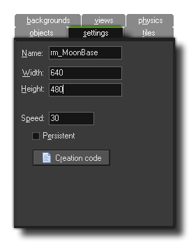
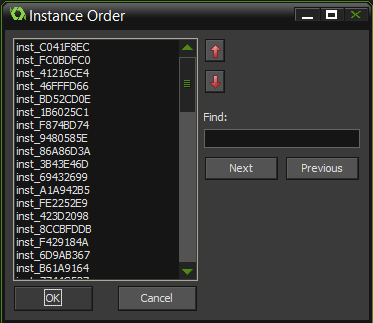

Settings
Each room has a number of settings that you can change by clicking on the settings tab.

This tab is where you set the basic details of your room and should be your first stop whenever you create a new room. The following settings are available :
Name
The "Name" of your room is the unique identifier that you can use to direct GameMaker:Studio to the correct resource. This name is really just a "pointer" as it holds the internal id of the room and "points"
GameMaker:Studio to the correct resource when it is referenced. This means that it is very important that no other resource has the same name as this will cause conflicts and cause unexpected
errors within your game. This name is what you will use in all code and actions that move the player from room to room or change room properties.
Width and Height
As you can imagine, a room has to have a size and this is defined by the values that you input for its width and height, in pixels. Be careful here, as it's very easy to say "I'm making a space game, let's have a room 100,000 x 100,000
pixels!" That is a recipe for disaster! GameMaker:Studio is powerful, but there are limits, and so when dealing with rooms it's much better to keep them as small as possible and then optimise your game around them,
especially if you are making a game for mobile devices or the web.
Speed
The room speed is defined as being the number of steps per second that GameMaker:Studio should run at. This is not the same as the fps (frames per second) which can (and usually does!) give a different value.
The room speed is the speed at which GameMaker:Studio ticks over and is a constant value, however the fps will fluctuate and is the actual speed at which the game is running. The typical room speeds for a game are
30 or 60, but some people like to set it slightly higher to 100 or 120. There are many arguments about which room speed is the ideal, but the actual answer depends on what type of game you are making, the size of the room,
the number of instances and how intensive the code is. For example, if you have a large room (anything over 1024 px) and a room speed of 30, the game may appear "choppy" as the larger the area you are looking at, the easier
it is for the eye to perceive low room speeds, but if the game is intensive then setting the room speed to 100 may cause the game to "lag" as the fps drops due to the amount of processing being done. So take care with this value
and try to always adjust it to what your game needs.
Persistent
Normally, when you leave a room and return to the same room later, that room is reset to its initial settings. This is usually fine for most games but it is normally not what you want in, for example, an RPG or any non-linear game,
where you want to come and go between rooms and have them be way you left it the last time. Checking the box labeled Persistent will do exactly that. The room status will be remembered and when you return to it
later, it will be exactly the same as you left it, with it only being reset to the start state when the game is reset. Note that there is one exception to this - if you marked certain objects as being persistent, instances of this
object will not stay in the room but move to the next room.
Creation Code
If you click on this button you will open a code editor. This editor allows you to input functions and code that will be run at the start of the room, after the create event of all instances but before their room start event.
Instance Order

On very rare occaisions you may require your game to create one object before any of the others, but not wish to use an alarm due to dependencies between instances. In that event, you can use this button to open up
the Instance Order window. Here you can select individual instances and move them up (or down) the creation order list, meaning that those at the top are those which are created first, while those at the bottom will be
created last. Note that if the create event of the instance actually creates further instances, those instances will be next in the order for running their code, before going to the next instance set in this list.